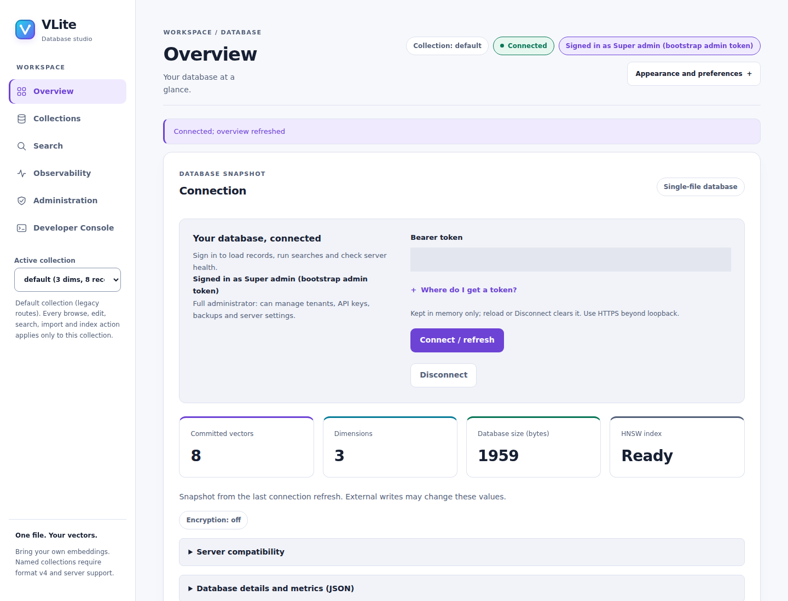
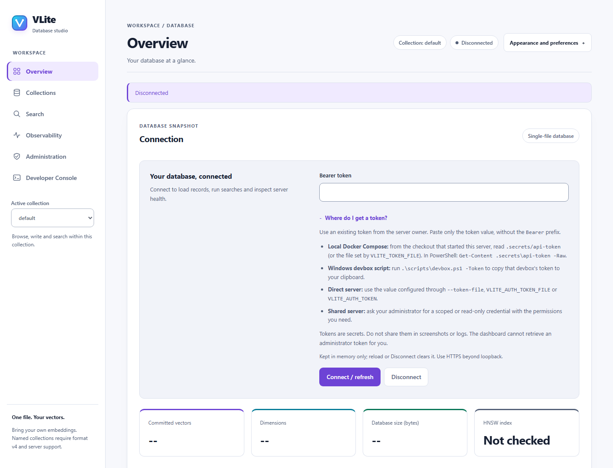
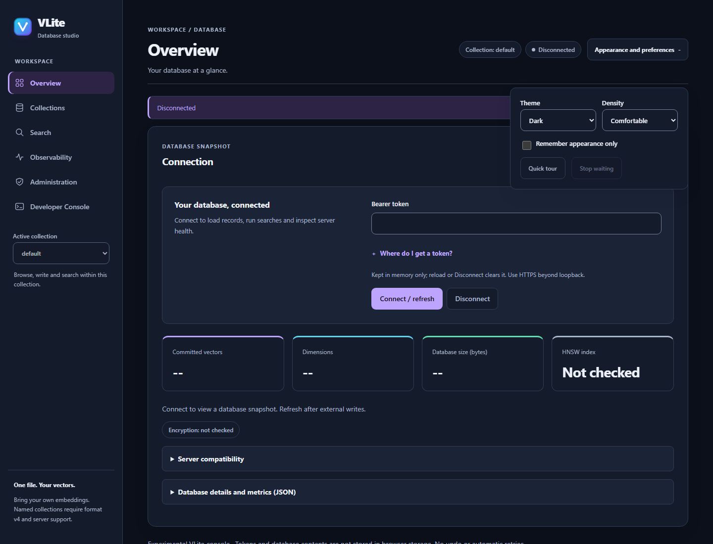

Your database, in focus
Browse records, run searches and monitor your own VLite server.
Your workspace, at a glance
Browse your data, manage connections and make the workspace your own.


Take a quick look around
Overview: connect to your database and see its status.
A clearer workspace
Six focused views, light and dark themes, and appearance controls that stay within reach.



Connect without guesswork
Token instructions are beside the field, with guidance for local and shared servers.


Your preferences, always nearby
Choose theme and density from the sticky header in any workspace.
Run locally from source
New to Docker or WSL? Start with guided setup for published images, prerequisite installation and restart instructions.
Clone the repository and follow the installation guide. From its root, with Docker running, prepare the API configuration and private token using the Docker REST quickstart. Then build both services from the current checkout:
The interface shown above requires a source build.
docker compose --profile dashboard up --build -d api dashboardOpen http://localhost:8081 for the standalone UI, or
http://localhost:18084/dashboard for the embedded UI.
Paste your existing .secrets/api-token value into the connection field.
These addresses refer to your own machine and only work after startup.
The standalone frontend proxies authenticated requests to the API; both views use the same database. Tokens stay in page memory and are cleared on reload or Disconnect. Keep the default loopback bindings; use the documented HTTPS deployment before remote access.
From records to operations
Explore records, run queries and manage your database in six focused workspaces.
Collections and record editing
Six workspaces with Records, Write, Search, Index and Settings collection tabs. Inspect Payload, Metadata, Vector and Raw JSON views, edit typed metadata and review explicit mutation confirmations.
Search and ingestion
Exact and ANN search, typed filters, validated JSON writes, bounded import/export and copy-as-code. Failed search refreshes retain prior results with an explicit error.
Metrics and live logs
Request/search rates, latency percentiles, route tables, sparklines and filtered JSONL log exports. Global metrics/log views require a bootstrap admin token. Logs are a bounded, memory-only ring, not a durable archive.
Administration and developer tools
Inspect health and credentials, review maintenance operations and inspect API requests. Follow the administration guide for permissions, backups and operational safeguards.
Know the boundaries
The dashboard does not generate embeddings. Writes replace records and require confirmation. Stopping a browser wait does not cancel server work or retry it. For offline workflows, use the VLite CLI tools; stop the server before opening its file with an exclusive-lock tool.